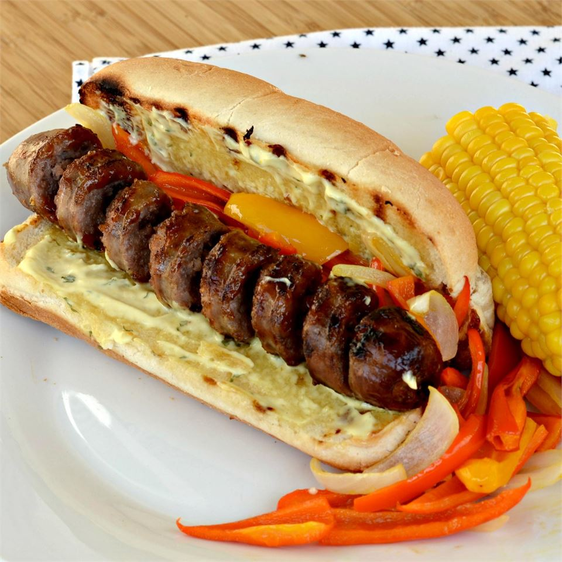

Curly-Q Grilled Sausages
- Serves: 2
- Prep time: 10 minutes
- Cook time: 15 minutes
- Additional time: 1 hour
- Total time: 1 hour 25 minutes

A curly sausage?! Really? Yes! This simple method will ensure any sauce or toppings will mix perfectly with every bite!
Your eyes aren't deceiving you, we've turned this sausage into your local deli's curly fry!
Trust us, this recipe is perfect for your next BBQ to really set your sausages apart from your arch enemy down the road!
Ingredients
- 2 (3.5 ounce) links Italian sausage
- 1 and a half cups of water
- 1 pinch of salt
- 2 metal skewers
- 1 tablespoon of BBQ sauce, or to taste
Steps
- Place sausages into a skillet over medium heat and pour in water. Add a large pinch of salt to the water and bring to a simmer. Cover and cook for about 3 minutes per side.
- Remove sausages from pan and let cool to room temperature. Refrigerate until cold, at least 1 hour. Insert a metal skewer the long way through each cooled sausage.
- Preheat an outdoor grill for medium-high heat and lightly oil the grate. Pour BBQ sauce into a small bowl.
- Place a sausage on a work surface and start making a knife cut about 3/4 inch from the end, holding the knife blade at a slight angle and cutting down to the skewer. Slowly rotate the sausage and continue cutting in a spiral until sausage is cut to about 1 inch from the other end. Gently spread the sausage apart on the skewer to create about 1/2 inch of space between the curls.
- Place sausages onto the preheated grill and cook until browned and meat is no longer pink inside, about 6 minutes; turn occasionally.
- Brush sausages with BBQ sauce using a pastry brush when sausages are nearly done. Cook, continuing to turn sausages, until sauce has caramelized onto the meat, about 1 minute per side. Transfer to a plate and let sausages cool for about 30 seconds before removing skewers for serving.
Back to top of page
Home